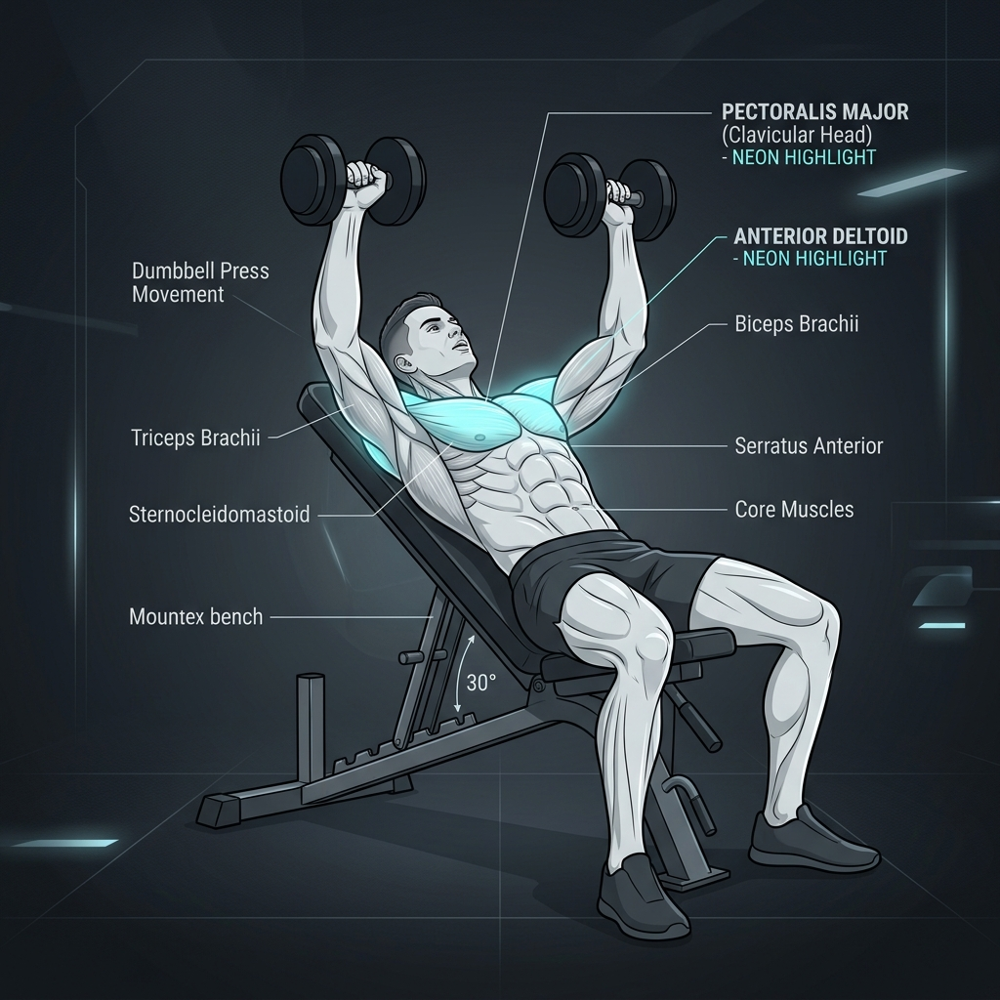
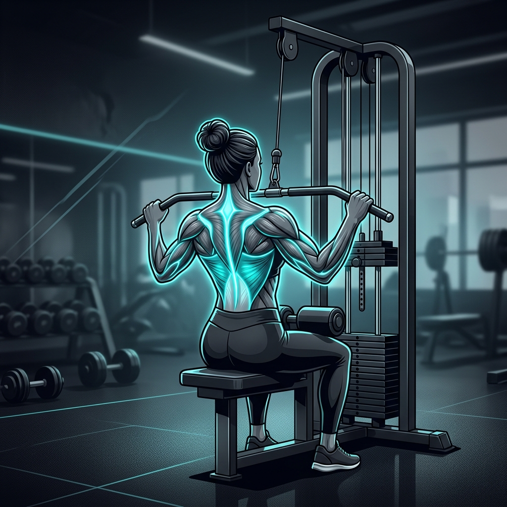
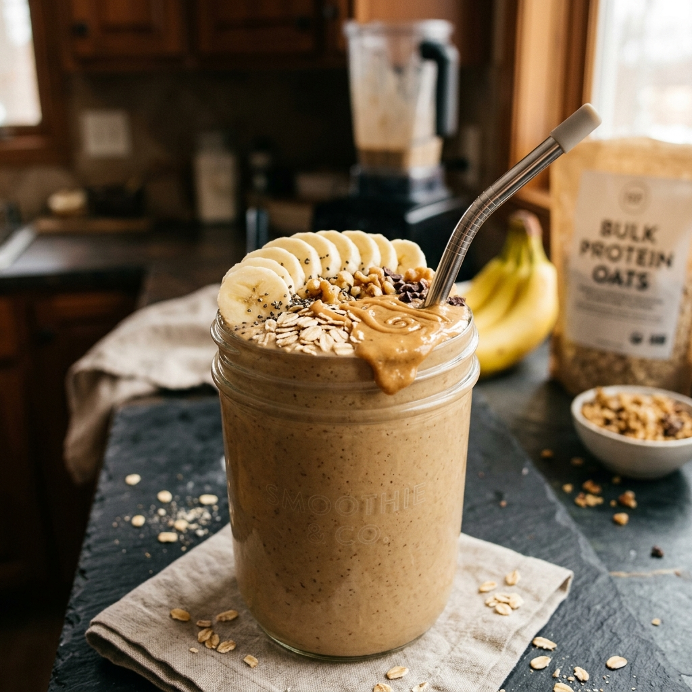
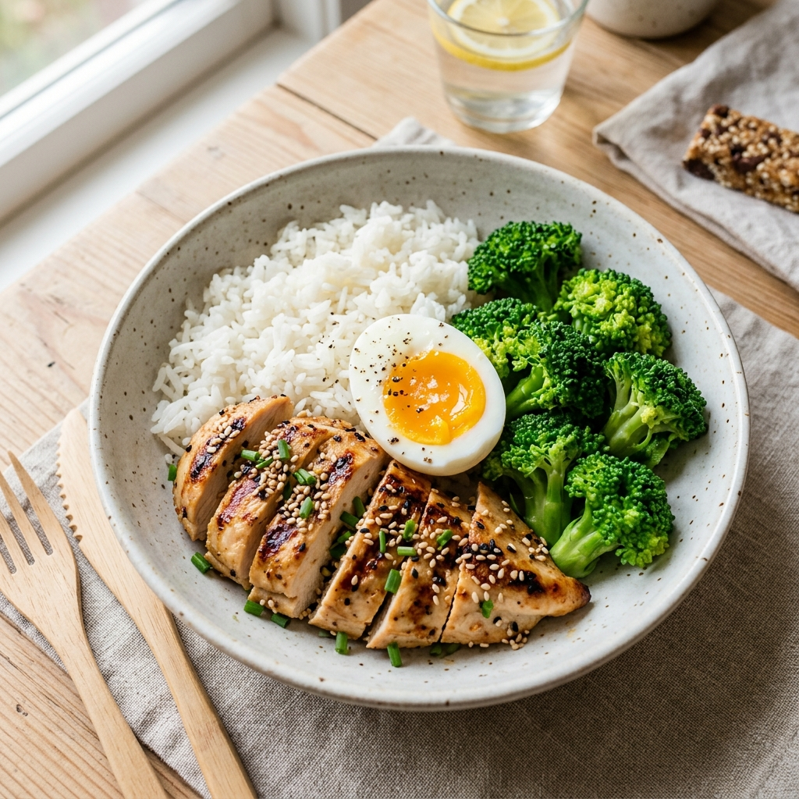

⚡ BULKING & HYPERTROPHY OS 2026
Hệ thống cá nhân hóa tăng cân & tăng cơ khoa học cho Ho Hoàng Sơn • 50.3 kg → 65.0 kg
💡 THÔNG TIN KHỞI ĐIỂM INBODY (19/10/2026):
- Chiều cao: 175 cm | Cân nặng: 50.3 kg | BMI: 16.4 (Thiếu cân)
- Cơ xương (SMM): 25.7 kg | Khối lượng mỡ: 3.9 kg (PBF: 7.8%)
- BMR: 1.371 kcal/ngày | Mục tiêu calo giai đoạn 1: 2.100 kcal/ngày (+250 kcal surplus)
- Mục tiêu Protein: 100g/ngày | Nước: 2.500 ml/ngày | Giờ ngủ tối thiểu: 7.5 tiếng
⏰ 1. LỊCH NHẮC NHỞ SINH HOẠT & DINH DƯỠNG (DAILY REMINDERS)
Tích chọn sau khi hoàn thành. Đặt chuông lặp lại mỗi ngày để rèn luyện thói quen nạp calo đều đặn:
🏋️ 2. GYM HUB — MINH HỌA BÀI TẬP & KỸ THUẬT (EXERCISE CARDS)
Bài Tập 1: Incline Dumbbell Bench Press (Đẩy Ngực Trên Ghế Dốc 30°)

- Nhóm cơ kích hoạt chính: Ngực trên (Clavicular Head) & Vai trước.
- Phạm vi Reps tối ưu: 8 → 10 → 12 reps (3 sets, nghỉ 120 giây).
- Mẹo an toàn: Ghế dốc vừa phải (~30°). Không để dốc quá cao sẽ ăn vào vai trước. Giữ khuỷu tay góc 45-60° so với thân người, hạ tạ trong 2-3 giây.
- Bài tập thay thế: Incline Machine Chest Press, Incline Smith Machine Press.
Bài Tập 2: Lat Pulldown (Kéo Xô Máy Rộng Tay)

- Nhóm cơ kích hoạt chính: Lưng xô (Latissimus Dorsi), Cơ quả trám (Rhomboids).
- Phạm vi Reps tối ưu: 8 → 12 reps (3 sets, nghỉ 90-120 giây).
- Mẹo an toàn: Ưỡn nhẹ ngực, hạ bả vai (depress scapula) trước khi kéo. Kéo khuỷu tay hướng về túi quần sau, không dùng đà đu người.
- Bài tập thay thế: Assisted Pull-up (Kéo xà có trợ lực), Seated Cable Row.
🥗 3. NUTRITION HUB — CÔNG THỨC MÓN ĂN TĂNG CÂN SINH VIÊN
Món 1: Sinh Tố Mass Tự Làm (Home-made Bulking Shake)

- Năng lượng & Macros: 625 kcal | 20.5g Protein | 81g Carb | 24g Fat
- Nguyên liệu chi tiết:
- 1 quả Chuối tiêu chín (~100g)
- 40g Yến mạch cán dẹt
- 30g Bơ đậu phộng mịn
- 220ml Sữa tươi có đường (Vinamilk / TH)
- 15g Sữa đặc có đường (tùy chọn)
- Cách làm (3 phút): Cho tất cả vào máy xay sinh tố, xay nhuyễn trong 45 giây. Uống lúc 16h chiều trước khi đi tập gym 60-90 phút.
Món 2: Cơm Ức Gà Xào Nấm & Trứng Ốp La (Meal-Prep Chuẩn Sạch)

- Năng lượng & Macros: 680 kcal | 48g Protein | 76g Carb | 18g Fat
- Nguyên liệu chi tiết:
- 250g Cơm trắng nấu chín (~1 bát tô vừa)
- 150g Ức gà tươi thái lát mỏng
- 1 quả Trứng gà ốp la lòng đào
- 50g Nấm đùi gà / nấm rơm xào cùng 5g dầu ăn
- 100g Bông cải xanh luộc ăn kèm
- Chi phí ước tính: ~28.000 VNĐ / suất. Dễ dàng nấu 2 suất cất hộp bảo quản ngăn mát tủ lạnh mang đi học hoặc đi làm.
📈 4. LỘ TRÌNH CỘT MỐC CÂN NẶNG (WEIGHT MILESTONES)
| Cột Mốc |
Mục Tiêu (kg) |
Chênh Lệch |
Thời Gian Dự Kiến |
Ý Nghĩa Chiến Lược |
| Baseline |
50.3 kg |
0.0 kg |
19/10/2026 |
Điểm xuất phát (BMI 16.4 thiếu cân, PBF 7.8%) |
| Cột mốc 1 |
55.0 kg |
+4.7 kg |
Tuần 8 - 12 |
Thích nghi đường ruột, quen dần với việc ăn thừa calo, tăng sức mạnh |
| Cột mốc 2 |
60.0 kg |
+9.7 kg |
Tuần 16 - 20 |
Thoát khỏi ngưỡng thiếu cân (BMI ~19.6 bình thường) |
| Cột mốc 3 (Goal) |
65.0 kg |
+14.7 kg |
Tuần 24+ |
Mục tiêu dài hạn: Thể hình dày, cơ bắp săn chắc, khỏe mạnh (BMI ~21.2) |